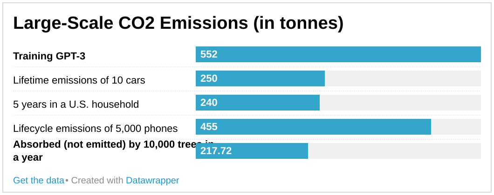
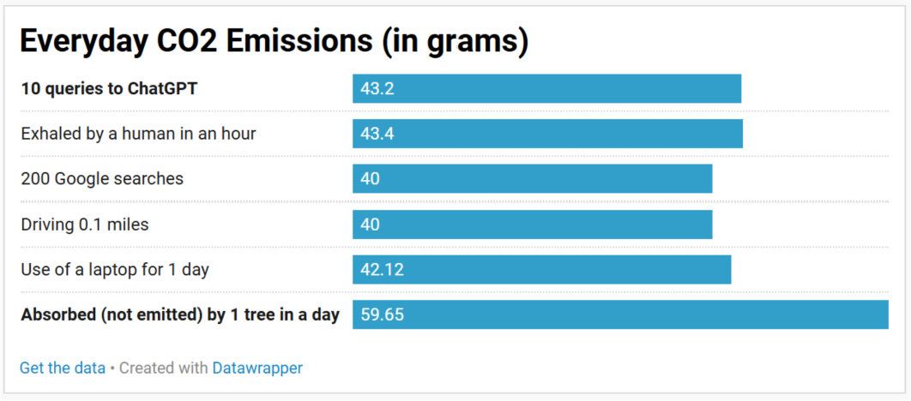

Environmental Visualization


Research Documentation
The research was fairly difficult to conduct, since many of these numbers are arbitrary. For example, there's a lot that can go into the "lifetime emissions" of cars or phones, which is not easy to define in the data visualization. I looked for statistics that were credible and considered the emission during manufacturing, usage, and disposal. However, even those boundaries allow for varying factors: the research could decide to include or exclude transport costs, resource mining emissions, differences in power grids, and more. This introduces a lot of uncertainty in the quality of the data and the truthfulness in the comparisons that are made. To balance this, I used sources that were from academic journals, university research pages, or climate/emissions-focused websites. I also cross-check against other pages to see if the numbers I found were within a reasonable range.
Another major uncertainty comes from the sources of CO2 emitted by AI themselves. Companies don't like to expose their manufacturing processes or environmental impacts, and instead tend to abstract them under terms like "the cloud." As a result, it is difficult to find exact numbers like the emissions of a query, especially when accounting for the different kinds of prompts, or the training of an AI. I used an academic paper for the number on the first chart, but the second chart was harder to find reputable data for. I ended up using a source that provided a widely cited number. This uncertainty highlights a lot of the hesitation about the environmental impact of AI, because it shows how difficult it is to measure the choices we make when companies have control over what data we can access.
Artist Statement
The environmental cost that most concerns me is the everyday CO2 emissions. These are emissions that are not very serious when considered on a small basis, but become exponentially more impactful as they scale by the amount of people and time they take place over. The second chart attempts to highlight this. It shows the reader how things they do every day, which they've likely learned about the environmental impacts of, are equivalent to a short conversation with AI. It puts into perspective how using only a little bit of AI everyday might build towards a real carbon footprint, just like driving to work does. This breaks the abstracted idea of AI generating an answer in "the cloud" and not being physically impactful. This offers the reader a sense of responsibility, as they understand that using AI comes with a real cost that combines with the rest of their day-to-day choices. At that point, they need to choose what they are okay with sacrificing to support our environment, just like they do when deciding to follow a recycling program or bike instead of drive.
For AI to be sustainable, entire systems supporting its manufacturing and usage process would need to be reworked. Right now, AI has increasing demand for water, power, and land. We would have to find a reliable and green alternative energy source, and try to restructure things like data centers and cooling technology so that AI consumes less land and water. In addition, people would need to shift their mindset away from the abstracted simplicity that tech companies promote, and actively decide to only use it when necessary. These are unrealistic and difficult goals, but worth working towards as AI becomes more commonplace.